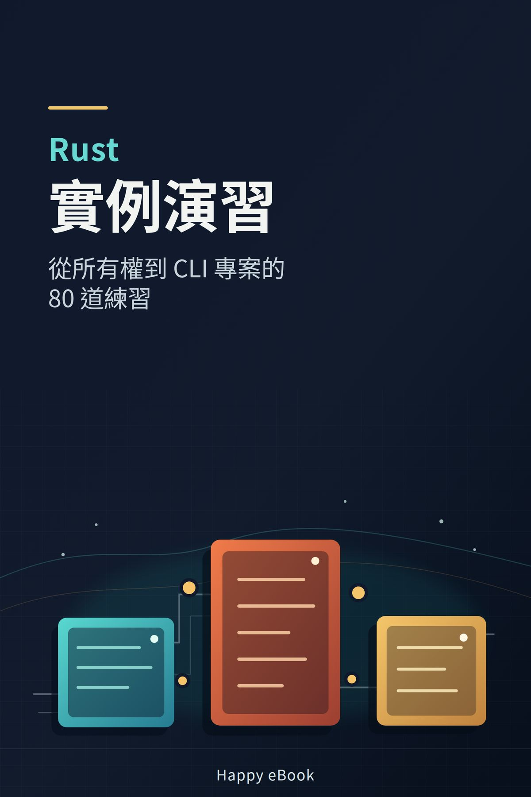

電子書
Rust 實例演習
《Rust 實例演習》是一本給已有基本 Rust 語法經驗讀者的實作工作簿，透過 80 道循序漸進的練習，逐步完成一個命令列支出紀錄工具

Rust 實例演習
《Rust 實例演習》是一本給已有基本 Rust 語法經驗讀者的實作工作簿，透過 80 道循序漸進的練習，逐步完成一個命令列支出紀錄工具
《Rust 實例演習》是一本給已有基本 Rust 語法經驗讀者的實作工作簿，透過 80 道循序漸進的練習，逐步完成一個命令列支出紀錄工具。 練習涵蓋型別、所有權、借用、資料模型、集合、錯誤處理、模組、檔案輸入與測試等主題，並以同一個專案串連各章內容。每題附有提示、驗收條件、常見陷阱與參考解答，協助讀者不只看懂範例，也能驗證程式的行為。 適合已接觸 Rust 基礎、希望透過實作把概念練成可執行 CLI 專案的自學者